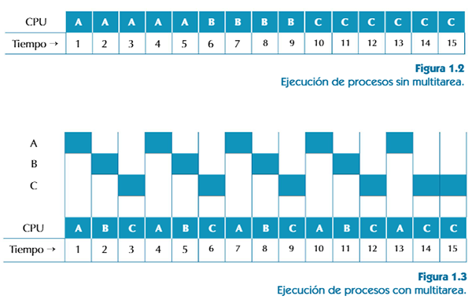
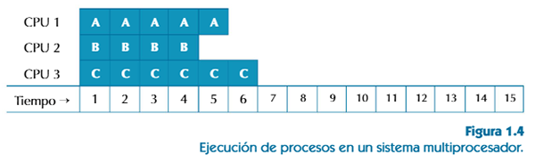
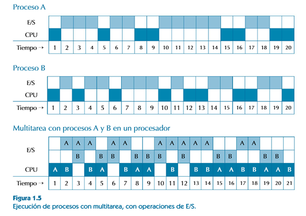

1.2. Multitarea
Los sistemas operativos actuales permiten ejecutar múltiples procesos a la vez. Un usuario puede editar un fichero de texto, reproducir un vídeo, copiar ficheros de un directorio a otro, y descargar un fichero de internet. Todo ello, aunque exista un solo procesador en el sistema. A intervalos regulares de tiempo, la ejecución del proceso en curso se detiene y toma el control un programa especial del sistema operativo, que puede parar la ejecución del proceso actual y pasar a ejecutar otro proceso.
En cada momento hay un único proceso en ejecución, pero la rápida alternancia entre ellos hace que todos puedan seguir avanzando a lo largo del tiempo, de manera que, en resumen, considerando un intervalo de tiempo, se puede considerar que múltiples procesos se ejecutan simultáneamente. Y así lo percibe, desde luego, un usuario del sistema.
Antes de empezar a ejecutar un nuevo proceso, se guarda el estado de ejecución del proceso actual, para poder más adelante retomar su ejecución en el mismo punto en que se interrumpió. En particular, se guardan los contenidos del contador de programas, y de los registros del procesador, y se cargan los del nuevo proceso. Esto se conoce como cambio de contexto.
El rendimiento de un sistema, por supuesto, aumenta si dispone de más de una procesador (sistema multiprocesador). En este caso, se pueden ejecutar en paralelo varios procesos, uno en cada procesador.
Pero, normalmente, siempre habrá muchos más procesos que procesadores, por lo que, también en el caso de los sistemas multiprocesadores, se hará multitarea en cada procesador.
Se puede pensar que, cuando solo se dispone de un procesador, no compensa la multitarea, porque, al tiempo de ejecución de los procesos, hay que sumar el tiempo necesario para los cambios de contexto, además del tiempo que necesita el sistema operativo para planificar la ejecución de los distintos procesos. Pero esto no es así, por los siguientes motivos:
El tiempo que se dedica a esto es pequeño en comparación con el que se dedica a la ejecución de los procesos, y se puede justificar con las ventajas de ejecutar varios procesos al mismo tiempo, especialmente para sistemas interactivos en los que hay una frecuente interacción entre el usuario y el ordenador. La manera natural de trabajar de una persona es hacer varias cosas a la vez, y querrá que todas las tareas con las que está trabajando avancen, y una respuesta rápida cuando interactúa con ellas.
Durante la ejecución de los procesos, suele haber periodos muy largos de tiempo en que no hacen uso del procesador, por estar esperando a que se terminen de realizar operaciones de E/S. Un procesador de textos, por ejemplo, pasa la mayor parte del tiempo desocupado, a la espera de que el usuario pulse una tecla o realice una acción con el ratón. También pasa intervalos de tiempo desocupado mientras obtiene el contenido de un documento almacenado en un fichero, o graba un documento en un fichero.
La figura 1.5 muestra la ejecución de dos procesos que alternan periodos de uso del procesador con periodos de espera para que se realicen operaciones de E/S. Se puede ver que el tiempo total de ejecución es solo ligeramente mayor al de cualquiera de ellos por separado, porque, en general, es posible utilizar el procesador para el otro proceso mientras éste está a la espera de que se complete una operación de E/S.
